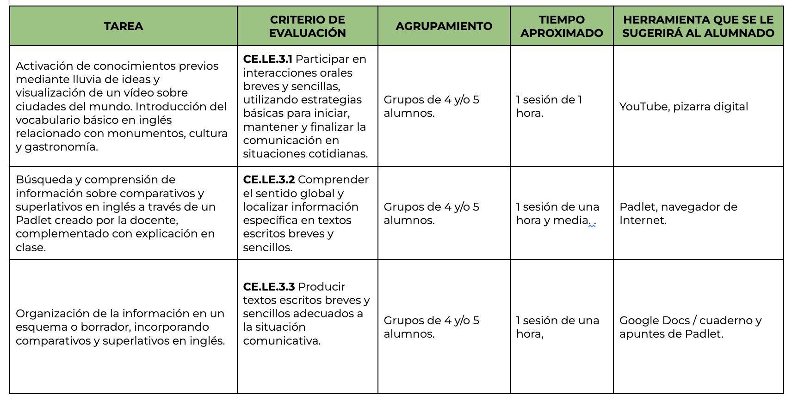
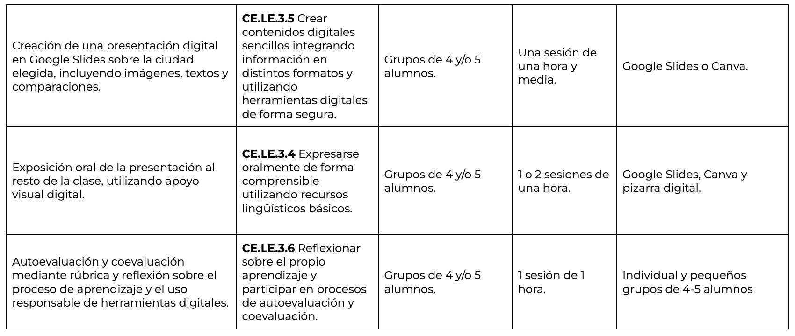

Texto
GUÍA DIDÁCTICA
Este proyecto está dirigido al alumnado de 5º de Educación Primaria en el área de Lengua Extranjera (Inglés).
Se basa en una metodología activa y cooperativa, en la que el alumnado aprende a través de la investigación y la creación de un producto final.
El trabajo se realiza en grupos de 4 o 5 alumnos, fomentando la colaboración, la participación y el aprendizaje entre iguales.
La temporalización es de 8 o 9 sesiones, aunque es flexible y puede adaptarse en función del ritmo del grupo, pudiendo desarrollarse en menos sesiones si fuera necesario.
El uso de herramientas digitales se realiza de forma guiada, promoviendo un uso responsable, seguro y adecuado de las tecnologías.
Atención a la diversidad
Se tendrán en cuenta las características del alumnado, adaptando las actividades cuando sea necesario y ofreciendo apoyo en el uso de herramientas digitales para garantizar la participación de todos.
Se facilitarán modelos, ejemplos y ayuda guiada para el alumnado que lo necesite, especialmente en la construcción de oraciones con comparatives y superlatives.
Relación entre actividades y evaluación
Las actividades del proyecto están relacionadas con los criterios de evaluación del área de Lengua Extranjera.
La investigación sobre la ciudad permite trabajar la comprensión de información en inglés.
La creación del borrador y de la presentación digital permite evaluar la producción escrita utilizando comparatives y superlatives.
La exposición oral permite evaluar la expresión oral, la pronunciación y la capacidad de comunicar información.
Las actividades de revisión y mejora permiten observar el progreso del alumnado durante el proceso.
Procedimiento de evaluación
La evaluación será continua a lo largo de todo el proyecto.
Se utilizarán diferentes instrumentos de evaluación:
-Rúbrica de expresión oral para la exposición final en Séneca.
-Cuestionario digital (Liveworksheets) para comprobar el uso de comparatives y superlatives.
-Cuestionario de Google Forms para la autoevaluación del alumnado y reflexión de su proceso de aprendizaje durante el proyecto.
Los datos obtenidos permitirán valorar el progreso del alumnado y detectar posibles dificultades, con el fin de ajustar la enseñanza y mejorar el aprendizaje.
Criterios de evaluación del proyecto:

